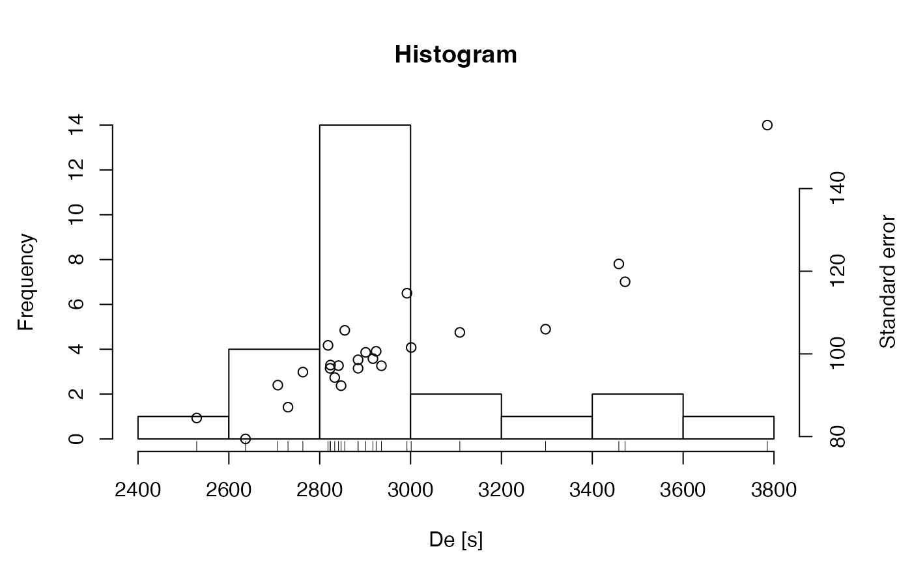
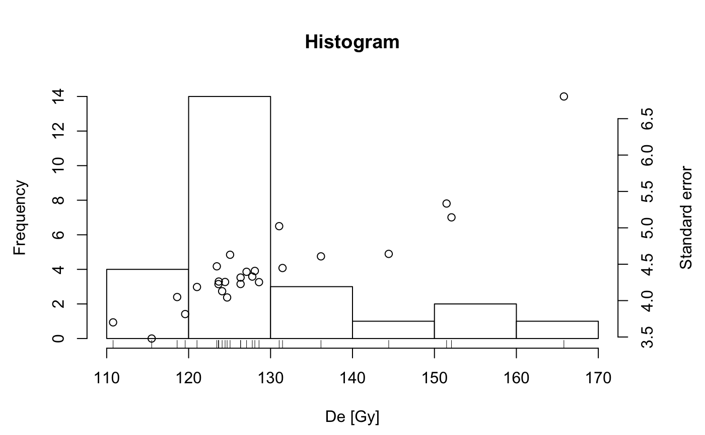

ExampleData.DeValues.RdEquivalent dose (De) values measured for a fine grain quartz sample from a loess section in Rottewitz (Saxony/Germany) and for a coarse grain quartz sample from a fluvial deposit in the rock shelter of Cueva Anton (Murcia/Spain).
A list with two elements, each containing a two column data.frame:
BT998
Unpublished data
CA1
Burow, C., Kehl, M., Hilgers, A., Weniger, G.-C., Angelucci, D., Villaverde, V., Zapata, J. and Zilhao, J. (2015). Luminescence dating of fluvial deposits in the rock shelter of Cueva Anton, Spain. Geochronometria 52, 107-125.
BT998
| Lab: | Luminescence Laboratory Bayreuth |
| Lab-Code: | BT998 |
| Location: | Rottewitz (Saxony/Germany) |
| Material: | Fine grain quartz measured on aluminum discs on a Risoe TL/OSL DA-15 reader |
| Units: | Values are given in seconds |
| Dose Rate: | Dose rate of the beta-source at measurement ca. 0.0438 Gy/s +/- 0.0019 Gy/s |
| Measurement Date: | 2012-01-27 |
CA1
| Lab: | Cologne Luminescence Laboratory (CLL) |
| Lab-Code: | C-L2941 |
| Location: | Cueva Anton (Murcia/Spain) |
| Material: | Coarse grain quartz (200-250 microns) measured on single grain discs on a Risoe TL/OSL DA-20 reader |
| Units: | Values are given in Gray |
| Measurement Date: | 2012 |
##(1) plot values as histogram data(ExampleData.DeValues, envir = environment()) plot_Histogram(ExampleData.DeValues$BT998, xlab = "De [s]")##(2) plot values as histogram (with second to gray conversion) data(ExampleData.DeValues, envir = environment()) De.values <- Second2Gray(ExampleData.DeValues$BT998, dose.rate = c(0.0438, 0.0019)) plot_Histogram(De.values, xlab = "De [Gy]")